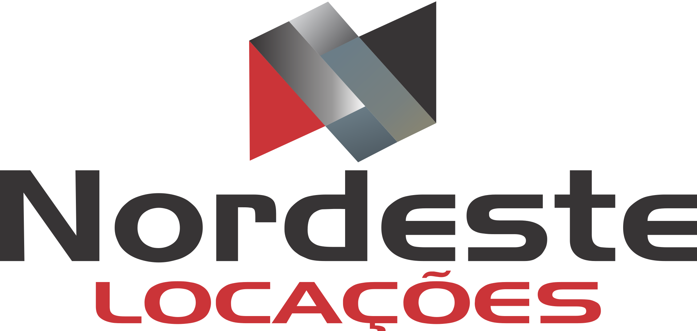
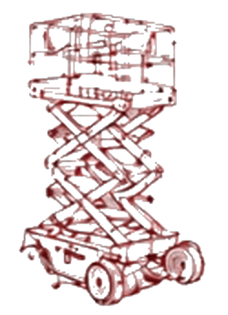
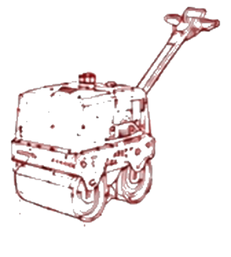
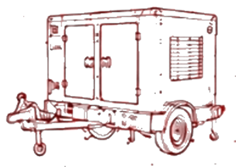
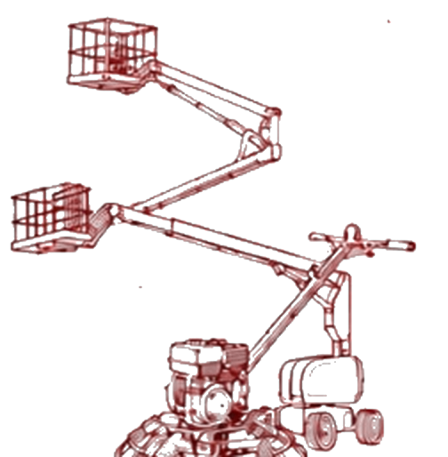

Ocorrências acompanhadas em tempo real e justificadas pelo líder no Sistema de Gente e Gestão.
As rotinas internas precisam evoluir junto com a empresa, com mais agilidade e menos tarefas repetitivas.
Transições na organização das jornadas, incluindo a preparação para o fim da escala 6x1.
Simplificar atividades operacionais e fazer a informação circular mais rápido entre líderes e Gente e Gestão.
Reduzir o trabalho manual para que líderes e Gente e Gestão dediquem tempo ao que realmente é gestão.
Toda terça-feira, o relatório de ponto da semana anterior era enviado aos líderes e gestores para análise e justificativa.
Ocorrências ficam paradas até o relatório sair.
≈15 min por líder, um a um.
Relatório da semana anterior.
Justificativas voltam por e-mail, sem padrão.
Divergências levam a uma nova conferência.
Montado um a um, toda terça.
A ocorrência só era vista na semana seguinte.
Cada líder justificava de um jeito.
Tudo dependia de checagem humana.
~3h por semana só montando relatórios.
Até ~10 dias entre a ocorrência e a justificativa.
Justificativas incompletas ou inconsistentes.
Reconferência e pendências no fechamento.
Todos os colaboradores, de todos os CNPJs.
Identifica atraso, falta ou inconsistência na hora.
Informa o colaborador, o dia e a ocorrência.
Em até 24h. O G&G valida.
Aconteceu de fato. O líder informa o motivo:
O aviso não condiz com a realidade. O líder explica o que de fato aconteceu para o G&G tratar.
| Colaborador | Nome do colaborador |
| Dia | 23/11/2026 |
| Ocorrência | Atraso na batida de entrada |
| Prazo | Justificar em até 24h |
13 relatórios × 15 min deixam de existir.
Da ocorrência à justificativa registrada.
O aviso sai sozinho, por ocorrência.
Todos os colaboradores, em tempo real.
Contadas a partir do e-mail automático: atraso, falta, esquecimento ou qualquer inconsistência.
Justificativas por e-mail, WhatsApp ou verbalmente deixam de ser aceitas.
Quem recebe o aviso é quem analisa, classifica e justifica.
A plataforma registra a ocorrência e avisa o líder.
Registro na plataforma com o arquivo do atestado.
O documento em papel continua obrigatório.
Gerenciamento e justificativa no sistema do RH.
O líder é responsável pela veracidade da informação que valida.
GENTE E GESTÃO · NORDESTE LOCAÇÕESVerifique o que de fato aconteceu antes de justificar.
A justificativa deve corresponder à realidade.
Evite descrições genéricas ou incompletas.
Trate as ocorrências sem deixar acumular.
Novo modelo, regras e responsabilidades.
Acesso, telas e como registrar as justificativas.
Fim dos e-mails de terça. Ocorrências tratadas na plataforma.
Com veracidade e, nos atestados, com anexo e original.
O treinamento será conduzido pelo NIT, com o passo a passo da ferramenta.